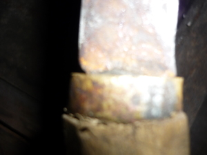

kamel 
/kamɔl/
n.
the attachment (of a knife blade to the handle)
Ka kamel iyan ka iggehet te subeng te ugpit, puruk, sangget, ilab wey duma pad ne egsubengan eyew kenè egkewulus wey ke egkapaka naa. Egkaayun ne innimu seini ligkat te putew, plastik, balahen wey duma pad. Diyè seini igtahù te ulu te subeng ne bayew egbangbangan eyew kenè egpakalepeng te subeng wey kenè egkewulus.
Mareet ka ugpit ne warè kamel te subeng su mahaan dè egkapaka.
It’s not good for bolo having no attachment of its handle because it can be easily break.
Egpeyimu e pad ki Amè te kamel su eyew kenè egpesuk mahaan ka sanggut ku.
I will ask Dad to make an attachment for my bolo's handle so that it will not pull out.
Iyan meupiya ne kamel ka putew su kenè egkakanat.
The thing that is the best attachment for a bolo's handle is iron because it will not stretch out.
Genr. ugpit —bolo
Eng. attachment
OCM: General Tools (412)
Online dict status: -
Usage level: M
v.
for someone or something (egpakamkamalan, egpAkA-rdpCV-) to hold tight someone or something
Wrd.Gloss: hold tight
Ka egkamkamalan iyan ka egkampetan wey eg-ay-ayaran te eggen-gen eyew kenè egkalekaan wey egpakaawè ka minsan nekey ne eggen-genan.
Pakamkamali nu te eggen-gen ka hari nu su egkalened.
Hold your younger sibling tightly because he/she will be carried away by the water.
Egpakamkamalan ku te eggen-gen ka ugpit su malurek ka subeng ne kema ke egpakapansut.
I will hold the bolo tightly because the handle is slippery and it might be thrown off.
Miglayang ka bayaku su warè ku nahud makamkamali te eggen-gen.
The bird flew because I didn’t hold it tightly.
Eng. hold tight; grab; grasp; hold onto
Online dict status: -
Usage level: M
Updated by: RJH,AAA,TME
Last updated: 13/Oct/2009
This page last updated: 19/May/2012
Copyright © 2009-2010, Matigsalug Language Christian Association, Inc